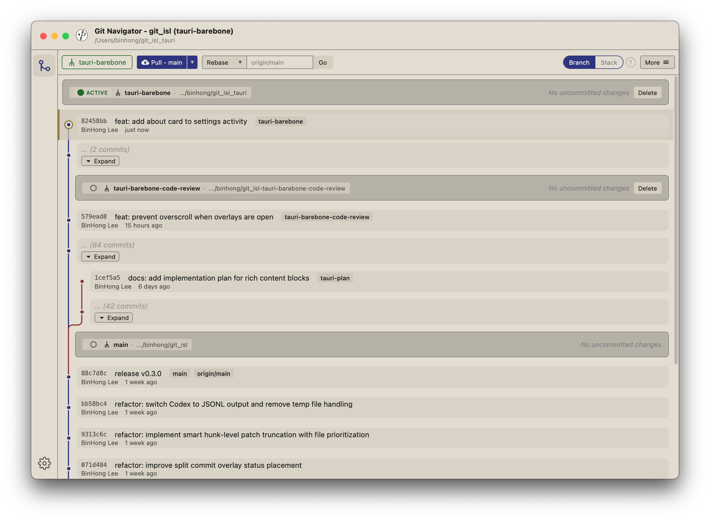

Desktop app (Alpha)
A native desktop build of Git Navigator.
Early preview of the desktop app. macOS only for now. (Windows and Linux builds coming later.) This is an alpha build, so expect rough edges and missing features.
Download for macOS